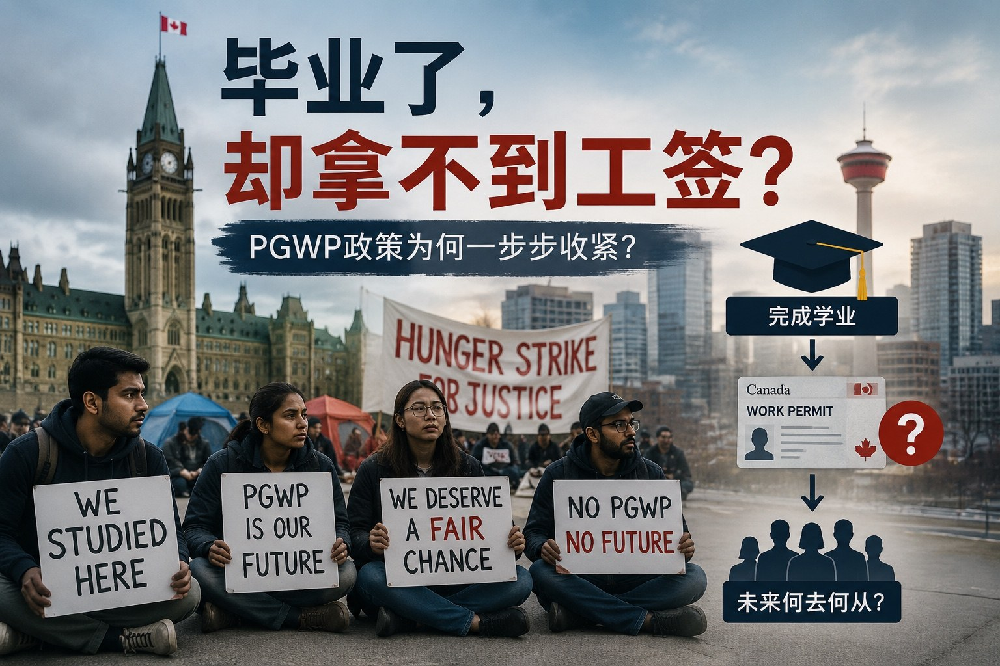

从毕业工签争议到学生绝食：加拿大国际学生制度为何走到今天？
Read in English
2026年7月，一批国际学生在卡尔加里发起绝食抗议。 他们表示，自己已经在加拿大完成学业， 却被拒绝签发毕业后工作许可 （Post-Graduate Work Permit，PGWP）， 公开抗议这样的结果不公平。
这场抗议很快引起媒体关注。 阿尔伯塔省省长Danielle Smith则公开表示， 如果国际学生的临时身份已经到期， 又没有取得新的工作许可或永久居民身份， 就需要离开加拿大。
表面上看， 这是一场围绕上百份毕业工签拒签引发的争议； 但如果回顾PGWP过去近二十年的发展， 就会发现，这件事其实折射出 加拿大国际学生制度一次更深层的转向。
PGWP为什么会被引入？
2008年，加拿大对毕业工签制度作出重要调整： 符合资格的国际毕业生可以获得最长三年的开放式工作许可， 不再需要提前取得Job Offer， 也不限制具体雇主或职业。
这项政策的目的十分明确： 吸引国际学生来加拿大接受教育， 并让他们毕业后有机会获得加拿大工作经验， 为加拿大留住年轻、受过本地教育的人才。
在之后相当长的一段时间里， PGWP的基本逻辑相对简单： 只要申请人完成了符合要求的课程， 在学习期间保持全日制身份， 并从符合资格的学校毕业， 通常就有机会申请毕业工签。
当时申请人最关心的，往往是两个问题：
- 学校是不是符合PGWP资格的指定学习机构；
- 课程长度能获得多长时间的毕业工签。
公立学院和大学的合资格课程通常可以申请PGWP； 一些获得省政府授权授予学位的私立学校， 其特定学位课程也可能符合要求。
对于很多国际学生来说， 加拿大留学逐渐形成了一条非常清晰的预期路径：
留学 → 毕业工签 → 加拿大工作经验 → 永久居民
PGWP也因此不再只是一项教育配套政策， 而逐渐成为加拿大吸引国际学生和技术移民的重要入口。
当学习许可逐渐被当成工作通道
问题在于， 当一项制度同时连接教育、就业和移民时， 它也很容易被过度包装和利用。
我曾经接触过一名国际学生。 他进入加拿大时持有学习许可 和课程相关的实习工作许可 （Co-Op Work Permit）， 但从来到加拿大的第一天开始， 主要活动就是工作， 几乎没有真正到学校上过课。
当然，这并不代表所有国际学生都存在类似问题。 但是，这个例子反映了现实中存在的现象： 对于部分学生而言， 学习只是取得加拿大临时身份的方式， 真正目的则是尽快进入加拿大劳动力市场。
Co-op work permit原本是为了完成 课程中不可缺少的实习部分， 并不是一份可以脱离课程使用的普通开放工签。
学习许可持有人也必须在指定学习机构注册、 积极完成课程并持续取得学习进展。
但在国际学生数量快速增长的时期， 学校是否真正监督学生上课、 课程是否具有实际教育价值、 学生是否把学习作为主要活动， 并不总能得到有效核实。
一些学校依靠国际学生的高额学费扩张招生； 一些招生机构则把 “入学、工作、毕业工签、移民” 包装成一条几乎确定的路线。
于是，学习许可、实习工签和毕业工签 逐渐形成了一条可能被利用的身份链条：
注册一个课程 → 取得学习许可 → 在学习期间工作 → 毕业后取得开放工签 → 寻找永久居民途径
真正的问题，不只是个别学生是否违规， 而是学校、招生机构、雇主、学生以及政府监管 共同构成的制度环境， 逐渐偏离了国际学生项目原本以教育为核心的定位。
2024年开始，PGWP开始快速收紧
加拿大政府近年的回应， 并不是直接取消PGWP， 而是不断缩小可以进入这条通道的人群。
首先受到影响的是 公立学院与私立学院之间的课程授权项目。
过去，一些公立学院将课程授权给私立职业学院授课。 学生虽然实际在私立学院就读， 毕业时却获得公立学院颁发的文件， 并可能申请PGWP。
这种模式曾经在部分省份迅速扩张。 IRCC后来宣布， 2024年5月15日或之后开始就读 这类公私合作课程的学生， 毕业后通常不再符合PGWP资格。
随后，PGWP又增加了语言要求。 自2024年11月1日起， 大多数PGWP申请人必须提交英语或法语考试成绩。
- 大学本科、硕士、博士以及其他大学课程， 语言要求通常为CLB 7或NCLC 7；
- 学院、理工学院及其他非大学课程， 语言要求通常为CLB 5或NCLC 5。
更重要的一项变化， 是对部分课程增加了专业限制。
对于在2024年11月1日或之后递交学习许可申请、 就读部分非学位课程的学生， 其专业必须属于PGWP认可的学习领域。
相关专业与加拿大长期劳动力短缺职业挂钩， 并可能根据劳动力市场需要调整。
目前，本科、硕士和博士学位毕业生 没有PGWP专业限制， 但仍需满足相应语言要求。
非学位课程申请人则必须更加谨慎地核实：
- 学校；
- 具体课程；
- CIP专业代码；
- 学习许可申请日期。
过去是： 完成符合资格的加拿大教育 → 获得开放工签。
现在逐渐变成： 完成符合资格的教育＋保持合法身份＋满足语言要求＋ 课程符合劳动力市场专业要求 → 才可能获得开放工签。
PGWP不再只是对“在加拿大读过书”的奖励， 而正在成为加拿大选择特定人才的一种政策工具。
学生是否完成课程，不是唯一问题
这次参加抗议的学生强调， 自己已经缴纳学费并完成学业， 因此应当获得毕业工签。
从学生的角度看， 这种失望不难理解。
许多人来到加拿大时， 接受到的信息就是毕业后可以工作， 之后还有机会移民。
他们为此付出了高额学费、 生活成本以及数年的时间。
但在法律上， 完成课程并不自动产生取得PGWP的权利。
申请人仍须证明：
- 完成的是符合资格的课程；
- 学校和具体项目具备PGWP资格；
- 学习期间保持符合要求的全日制身份；
- 满足适用的语言及专业条件。
因此，判断一份PGWP拒签决定是否合理， 不能只看学生是否拿到了毕业证书， 还需要核实：
- 具体项目是否符合PGWP资格；
- 入学和申请学习许可的日期；
- 学习期间是否保持全日制身份；
- 是否存在未经批准的停学、缺课或长期未实际学习；
- 申请人是否满足新的语言和专业要求。
在没有看到具体拒签理由和完整学习记录之前， 也不能仅凭学生已经毕业， 就判断拒签一定不公平。
政府也不能完全置身事外
但是，如果将今天的问题完全归咎于学生， 也是不公平的。
加拿大政府曾经主动利用PGWP和移民机会 吸引国际学生； 各省学校从国际学生学费中获得大量收入； 一些学院依靠国际招生扩大规模； 地方雇主也长期受益于国际学生提供的劳动力。
在这个过程中， “加拿大教育＋开放工签＋移民机会” 被长期用作国际招生的重要卖点。
当政府认为国际学生数量增长过快、 部分项目被滥用、 住房及公共服务承受压力后， 又开始迅速改变规则。
政府有权调整政策， 也有责任维护制度完整性， 但政策频繁变化造成的成本， 往往由已经入学或即将毕业的学生直接承担。
这正是此次抗议最值得关注的地方： 政府正在纠正过去多年扩张和监管不足带来的问题， 但很多学生却是按照以前的宣传和预期 作出了人生决定及财务规划。
其中一些人可能确实不符合PGWP条件； 另一些人则可能没有充分理解 自己所读课程的真实资格； 也可能有人受到学校或招生机构 不准确宣传的影响。
他们不一定都能够获得工签， 但他们的处境提醒政府： 国际学生制度不能一边依靠模糊的就业与移民前景吸引学生， 一边又在问题出现后把所有责任推给个人。
“留学等于移民”的时代正在结束
这场绝食抗议最终会如何处理， 目前仍有待观察。
但它释放出的政策信号已经十分清楚： 加拿大没有取消国际学生毕业后工作的机会， 但正在重新定义谁可以获得这项机会。
未来的PGWP将越来越强调：
- 学校和课程的真实性；
- 学生是否真正完成学习义务；
- 语言能力；
- 专业与加拿大劳动力市场的联系；
- 整个学习计划是否具有合理的教育和职业逻辑。
对于计划来加拿大学习的人来说， 今天仅仅确认学校能够发出录取通知书， 已经远远不够。
在缴纳学费之前， 国际学生应当核实：
- 具体学校和具体课程是否符合PGWP资格；
- 课程属于学位、文凭还是非学分培训；
- 专业CIP代码是否符合当前要求；
- 未来是否需要提交语言成绩；
- 毕业工签长度如何计算；
- 即使获得PGWP， 所学专业和未来职业是否真的存在可行的移民路径。
加拿大过去曾经通过宽松的毕业工签制度 吸引大量国际学生。
今天，政府正在努力把PGWP 重新拉回教育质量和劳动力需求的轨道。
这场抗议并不仅仅是几名学生 与移民部门之间的争议。
它更像是加拿大国际学生制度 从快速扩张走向严格筛选过程中， 一次集中爆发的矛盾。
真正需要被重新审视的， 不只是学生能否获得一份工签， 而是加拿大过去向国际学生提供了怎样的预期， 又准备如何对这些预期负责。
From PGWP Disputes to Student Hunger Strikes: Why Has Canada’s International Student System Reached This Point?
In July 2026, a group of international students in Calgary began a hunger strike after their applications for Post-Graduate Work Permits (PGWPs) were refused.
The students argued that they had completed their studies in Canada and believed they should have been able to remain in the country to work.
The protest quickly attracted national media attention. Alberta Premier Danielle Smith responded that individuals whose temporary status has expired, and who have not obtained another valid immigration status, are expected to leave Canada in accordance with Canadian immigration law.
At first glance, the dispute appears to be about a number of refused work permit applications.
However, viewed in a broader context, it reflects a much larger shift in Canada’s approach to international education and immigration.
Why Was the PGWP Introduced?
Canada’s Post-Graduate Work Permit Program was significantly expanded in 2008.
Eligible international graduates were allowed to obtain an open work permit for up to three years without first securing a job offer or being tied to a specific employer.
The policy had a straightforward objective: attract talented international students, allow them to gain Canadian work experience after graduation, and encourage them to build long-term careers in Canada.
For many years, the rules were relatively simple.
Students who completed an eligible program at a designated learning institution, maintained full-time status during their studies, and met the program requirements could generally qualify for a PGWP.
As a result, many prospective students focused primarily on two questions:
- Is this institution eligible for the PGWP Program?
- How long of a work permit will I receive after graduation?
Eligible public colleges and universities generally qualified, while certain degree-granting private institutions also offered programs that could lead to a PGWP.
Study in Canada → Graduate → Obtain a PGWP → Gain Canadian work experience → Apply for permanent residence
The PGWP gradually evolved from an educational support measure into one of Canada’s most influential immigration pathways.
When Study Permits Became a Pathway to Employment
The challenge was that the international student program eventually served multiple purposes at the same time: education, employment, and immigration.
Like many immigration professionals, I have encountered situations where the primary purpose of studying appeared to be secondary.
One case involved a student who entered Canada with a study permit and a co-op work permit but spent almost no time attending classes.
Instead, the individual worked almost continuously from the time he arrived in Canada.
This example does not represent the majority of international students.
Most genuinely pursue their education and comply with the conditions of their permits.
However, it illustrates how the system could be exploited.
A co-op work permit is intended to allow students to complete a mandatory work placement that forms part of their academic program.
It is not designed to function as a general open work permit.
Likewise, study permit holders are required to remain enrolled, actively pursue their studies, and comply with the conditions attached to their permits.
During the years of rapid growth in international student enrolment, however, oversight did not always keep pace.
Questions were increasingly raised about whether some institutions adequately monitored attendance, whether certain programs delivered meaningful educational value, and whether studying remained the primary purpose of some applicants.
At the same time, some educational institutions relied heavily on international tuition revenue, while some recruitment agents promoted an increasingly simplified message:
Enroll in a program → Obtain a study permit → Work in Canada → Receive a PGWP → Immigrate permanently
The issue was never simply about individual students failing to follow the rules.
It reflected a broader system in which educational institutions, recruiters, employers, students, and government policies collectively moved the international student program away from its original educational purpose.
The Turning Point: Major PGWP Reforms
Rather than eliminating the PGWP Program, the federal government began narrowing eligibility.
One of the first major changes targeted public-private college partnership programs.
Under these arrangements, students attended classes at private career colleges while receiving credentials issued by public institutions, allowing many graduates to qualify for PGWPs.
As these partnerships expanded rapidly, the government announced that students enrolling in these programs after May 15, 2024 would generally no longer be eligible for a PGWP.
Later that year, Canada introduced language proficiency requirements for most PGWP applicants.
Beginning November 1, 2024, applicants became subject to minimum English or French language requirements, with higher benchmarks generally applying to university graduates than to graduates of other post-secondary programs.
The government also introduced field-of-study restrictions for many non-degree programs.
Students applying for study permits after November 1, 2024 in certain diploma or certificate programs must now graduate from fields linked to Canada’s long-term labour market needs in order to qualify for a PGWP.
While bachelor’s, master’s, and doctoral graduates remain exempt from the field-of-study restrictions, they must still satisfy the applicable language requirements.
Previously: Complete an eligible Canadian education and receive an open work permit.
Today: Eligibility increasingly depends on the institution, program, language ability, compliance with study permit conditions, and labour market relevance.
The PGWP has become less of a universal post-study benefit and more of a targeted workforce policy.
Graduation Alone Does Not Guarantee a PGWP
Many students participating in the recent protests argue that they completed their education and paid substantial tuition, and therefore should qualify for a work permit.
Their frustration is understandable.
Many chose Canada believing that graduation would naturally lead to employment opportunities and eventually permanent residence.
They invested years of their lives and significant financial resources based on those expectations.
Legally, however, graduating from a Canadian institution does not automatically create an entitlement to a PGWP.
Eligibility depends on numerous factors, including:
- whether the institution and program qualify;
- whether the student maintained full-time status throughout the studies;
- whether all study permit conditions were respected;
- whether the applicant satisfies the current language requirements; and
- whether applicable field-of-study requirements are met.
Without reviewing the specific refusal reasons and the applicant’s academic history, it is impossible to conclude that every refusal is either correct or incorrect simply because the student graduated.
Government Also Shares Responsibility
At the same time, it would be overly simplistic to place all responsibility on students.
For many years, Canada actively promoted international education as both an educational opportunity and a potential pathway to long-term settlement.
Provinces benefited from international tuition revenue. Educational institutions expanded enrolment. Employers gained access to additional workers. Immigration pathways remained relatively accessible.
In many respects, every participant in the system benefited from its rapid expansion.
When governments later concluded that international student numbers had grown beyond available housing, infrastructure, and labour market capacity, policy changes followed quickly.
Governments have every right to adjust immigration policy in response to changing economic and social conditions.
However, those policy shifts inevitably affect students who made life-changing decisions based on previous rules and expectations.
Some students involved in today’s protests may genuinely not qualify under current legislation.
Others may have misunderstood the eligibility requirements of their programs.
Still others may have relied on overly optimistic advice from recruiters or educational institutions.
Their circumstances are not identical, and each case must ultimately be assessed on its own facts.
A system cannot spend years promoting education as a pathway to work and immigration, then expect all of the consequences of changing direction to be borne solely by those who relied on that message.
The End of “Study, Then Immigrate”
Whether the current protests lead to any policy changes remains uncertain.
What is already clear, however, is that Canada’s approach to international students has entered a new phase.
The country has not eliminated opportunities for graduates to remain and work.
Instead, it has become far more selective about who qualifies.
Prospective students today should look well beyond admission offers.
Before choosing a program, they should carefully examine whether:
- the institution and specific program qualify for a PGWP;
- the credential is eligible under current rules;
- any field-of-study restrictions apply;
- language requirements will need to be met;
- the expected PGWP duration aligns with their long-term plans; and
- the program realistically supports their future immigration objectives.
Canada once relied on a broad and accessible PGWP system to attract international students.
Today, the program is increasingly designed to support labour market priorities, educational integrity, and targeted immigration objectives.
The recent hunger strike is therefore about much more than a group of refused work permits.
It represents a difficult transition from an era of rapid expansion to one of greater selectivity.
Perhaps the most important question is no longer whether individual students should receive a work permit.
It is how Canada balances its evolving immigration priorities with the expectations it created for thousands of international students who chose Canada believing they were investing in a long-term future.